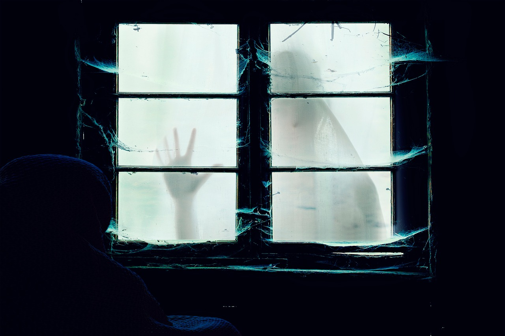

The Chosen
Série dramática que retrata a vida de Jesus Cristo sob a perspectiva das pessoas que o conheceram. Uma produção emocionante e inspiradora.
Suas próximas séries favoritas estão aqui!
Selecionamos as melhores séries para você assistir. Clique nos cards e assista os trailers no YouTube!
Série dramática que retrata a vida de Jesus Cristo sob a perspectiva das pessoas que o conheceram. Uma produção emocionante e inspiradora.
Gangue liderada por Tommy Shelby ascende ao poder no submundo britânico pós-Primeira Guerra. Ação, drama e personagens inesquecíveis.
Um engenheiro elabora um plano complexo para tirar seu irmão injustamente condenado da prisão. Suspense de tirar o fôlego a cada episódio!
A emocionante história de uma família ao longo de décadas, explorando amor, perda e conexões profundas. Prepare os lenços!
Crianças enfrentam forças sobrenaturais e segredos governamentais após o desaparecimento de um amigo. Nostalgia dos anos 80 com muito mistério!

Quer fugir totalmente das séries do momento e maratonar uma série com muitas temporadas?
Supernatural é uma série de televisão americana que segue os irmãos Sam e Dean Winchester em suas viagens pelo país, caçando criaturas sobrenaturais e lutando contra o mal. A série explora temas como família, destino, livre-arbítrio e a luta entre o bem e o mal.
Clique nos botões acima para assistir aos trailers no YouTube e comece sua maratona hoje mesmo!